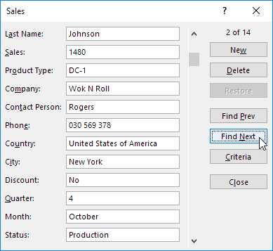
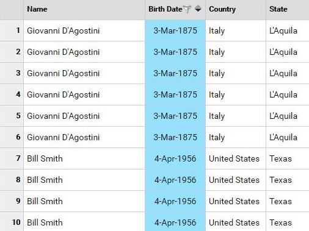
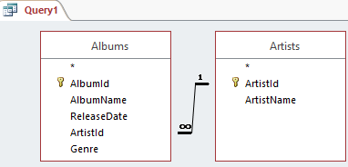
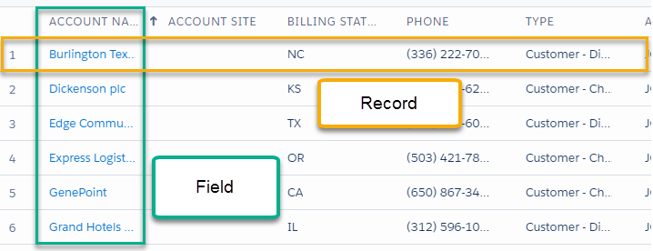

| Validity check | Function | Example |
|---|
| Field Presence check | Ensure that all necessary fields are present. | The student number must be included in the student record. |
| Field Length check | Ensure all the data has the correct number of characters or digits. | A domestic telephone number in Hong Kong must have 8 digits |
| Range check | Ensure that the data value is within a prederermined range. | The mark of a test should range from 0 to 100. |
| Fixed value check | Ensure that the data conforms to be one of the values in a pre-defined list. | The gender of a student must be either 'Male' or 'Female'. |
| Format check | Ensure that the form of data follows some known patterns. | The e-mail address must be a combination of a user name and a domain name with the symbol '@' in between. |
| Type check | Ensure that the data types are correct. | The students' examination marks should be numbers but not characters, while their names should be characters but not numbers. |
| Check digit | It is used for self-checking. With numeric data, a check digit is calculated using a mathematical formula and this is then attached to the end of the number. When the check digit of the number matches the digit calculated from the number, the number is confirmed valid. | The check digit of ISBN |
| Level | Description | Example of usage |
|---|
| Field | It is the smallest unit of data that can be accessed by a user.Represent a specific fact of a record.Can be of type: numeric, text, date, Boolean, etc. | Telephone numberMailing addressMonthly incomeMarital status |
| Record | It is a collection of related fields.Contain information of one specific entity.The data in a key field can be used to uniquely identify one particular record from the others. |  |
| Table | It is a collection of related records with identical record structures.Contain the information of all entities stored in specific record format.All records in a table have unique and different values in key field. |  |
| Database | It is a collection of related tables.May link records from different tables dynamically with one or more key fields. |  |
